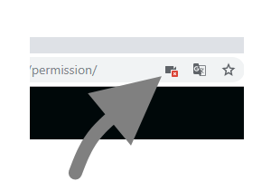

Microphone Permission for
Rain Voice Note
Click the Microphone icon.
Click on the red-crossed camera in the right corner of the Chrome address bar.

Select Always allow https://nvjob.github.io to access your microphone.
Click on Done. Reload app.
This will only need to be done once at initial login when using the web app.